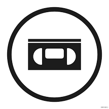
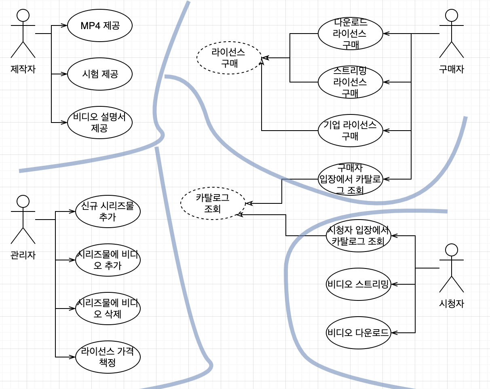
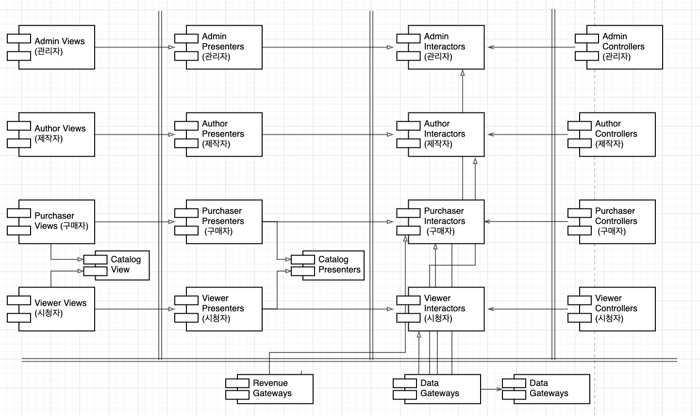

“CleanArchitecture 33장”
사례 연구 적용하기

제품
웹 사이트에서 비디오를 판매하는 소프트웨어
판매되길 원하는 비디오들을 웹 사이트를 통해 개인과 기업에게 판매
개인 - 단품가격을 지불하여 스트리밍으로 보거나, 다운로드하여 영구소장
시청자인 동시에 구매자
기업 - 스트리밍 전용, 대량 구매시 할인
비디오 구매자가 따로있음
비디오 제작자 - 비디오 파일, 설명서, 부속 파일(시험, 문제, 해법, 소스코드 등) 제공
관리자 - 신규 비디오 시리즈물 추가
기존 비디오 추가 삭제
라이선스에 맞춰 가격 책정
유스케이스 분석

- 네가지 액터는 시스템이 변경되어야 할 네가지 주요 근원
- 시스템을 분할하여 특정 액터를 위한 변경이 나머지 액터에게 전혀 영향을 미치지 않게 해야 함
컴포넌트 아키텍처

- 이중선 - 아키텍처 경계
- 뷰, 프레젠터, 인터랙터, 컨트롤러로 분리된 전형적 분할 방법
- 대응하는 액터에 따라 카테고리 분리
- 각 컴포넌트는 단일 .jar 또는 단일 .dll 에 해당
- Catalog View, Catalog Presenter : 카탈로그 조회라는 추상 유스케이스를 처리. 추상 클래스로 코드화
- 각 컴포넌트를 독립적으로 컴파일하고 빌드 할 수 있는 환경 구성 시 추후 시스템 변경 양상에 따라 배포 방식 조정 가능
의존성 관리
제어흐름 오른쪽 -> 왼쪽
컨트롤러 : 입력-> 인터랙터 : 결과 만듬 -> 프레젠터 : 포맷 변경 -> 뷰 : 화면 표시
의존성 규칙 준수 : 왼쪽 -> 오른쪽
더 높은 수준의 정책을 포함하는 컨트롤러를 향함
저수준의 세부사항에서 발생한 변경이 상위 수준의 정책에 영향을 미치지 않음
결론
위 아키텍처 다이어그램은 두가지 서로 다른 차원의 분리 개념을 포함하고 있다.
- 단일 책임 원칙에 기반한 액터 분리
- 의존성 규칙
이 두가지 모두 서로 다른 이유로, 서로 다른 속도로 변경되는 컴포넌트를 분리하는데 그 목적이 있다.
이런 방식으로 코드를 구조화 하게 되면, 추후 시스템 배포 방식을 다양하게 선택할 수 있고, 변경이 쉬워진다.